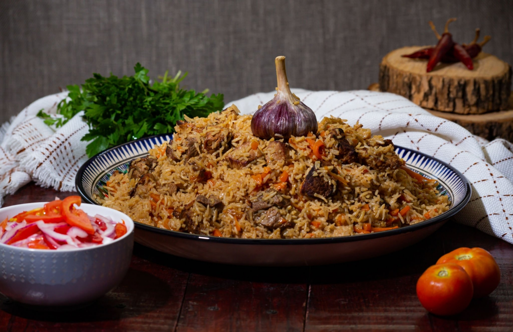

Pilau Recipes

Description
Ingredients
- Beef
- Onion
- Garlic
- Ginger
- Bay leaves
- salt
- Ground cloves, cumin, cinnamon, cardamom
- Paper flakes
- Rice
Steps
- Toast and blend the pilau masala: In a medium saucepan over medium heat.
- Brown the onions by frying it in oil until it caramelizes. This should take about 10 to 15 minutes. Stir in the Garlic, ginger and serrano pepper.
- Add the meat stock cubes, pilau masala, cilantro, bay leaves, and salt to taste and brown the meat for about.
- Stir in the tomatoes and cook till it dissolves. Then stir in the potatoes.
- Add water and bring everything to a rolling boil and leave the potatoes to cook for about 10 minutes.
- Stir in the rice then cover tightly. You can use an aluminum foil to cover it first, this will help keep the steam in. Then place the lid over it and leave to cook on a low heat for 20 minutes until the liquid has been absorbed.
- Serve hot! You can sprinkle the rice pilau with some chopped cilantro, then fluff with a fork. Enjoy.